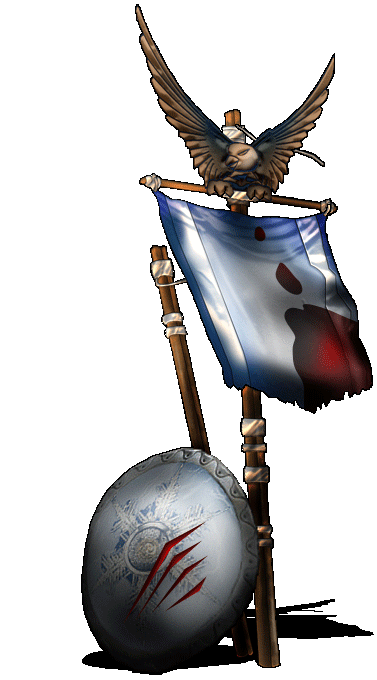

|

|
Das schwarze Brett
|
|
| Übersicht,
Anschläge und Stammtisch (RPG) |
|
Kollekte
|
| Minuiriel O Ithil (RIP) |
*verneigt sich* Es wird für die grossherzige Spende der Nation Vertex Time Travellers in Höhe von Dreihunderttausend Goldstücken gedankt.
Freifrau Minuiriel O Ithil,
Vorsteherin von Sala Muinthel,
Ehefrau des ehrenwerten Sojus Bane
Zur 20. Stunde am 37.Blumenmond im Jahre 426 |
30.09.06 20:13
 |
|
Alberix, Sohn des Duglim
  |
*an dem Anschlag vorbeikommt und dich Stirn runzelt*
Was passiert nun mit dem überschüssigen Geld?
*leicht zu lächeln beginnt*
Zudem wollte ich darauf hinweisen, dass es nicht verboten ist, noch weitere Spenden zu bringen - es geht um die Untermauerung des Gemeinschaftsgeistes welcher klar in der Aktion lag.
*Geht weiter und trauert etwas seinem teuren Langschwert nach, dass ihm geklaut wurde*
Baron Alberix, Sohn des Duglim,
Vorsteher von Rogalis
Zur 7. Stunde am 50.Blumenmond im Jahre 426 |
03.10.06 18:12
|
|
| Minuiriel O Ithil (RIP) |
Im Namen Makis sei es gedankt: Die werte Markgräfin Goldenes hat in Basilea den grossmütigen Betrag von 100000 Goldstücken gespendet. Gedankt seis auch dem werten Herrn Bluemchen. Dazu verzichtet die werte Markgräfin auf eine Bauentschädigung.
Der werte Baron Tilion übergab in Tarankar ebenso den Betrag von 100000 Goldstücken. Er empfahl sich damit dem Geiste Unserer Sieben. Es sei ihm gedankt für seine Anteilnahme.
Es wurden insgesamt Einskommaeinsmillionen Goldstücke eingenommen. Dies kam so zustande:
- 400´000 Goldstücke durch direkte Spenden an den werten Logan
- 500´000 Goldstücke wurden mir anvertraut. Sie gehen zu Händen des werten Logan.
- 200´000 Goldstücke kamen von der werten Gräfin Solara. Sie legte den Betrag aus und verzichtete auf die Rücknahme. Auch ihr sei herzlich gedankt dafür.
So hats nun Hunderttausend Goldstücke überschüssig hier. Ich hab keine weiteren Spendengesuche bekommen. Darf ich vorschlagen die Goldstücke als kleine Entschädigung für das Langschwert dem werten Alberix, dem Sohn des Duglim zu übergeben?
((Ausnahmsweise OOC: Es tut mir sehr leid dass es so lang gedauert hat. Aber ich bin gerade krank(etwas mit den Augen) und kann so kaum hiersein. Darum die Verspätung...))
Freifrau Minuiriel O Ithil,
Vorsteherin von Sala Muinthel,
Ehefrau des ehrenwerten Sojus Bane
Zur 2. Stunde am 67.Blumenmond im Jahre 426 |
07.10.06 16:02
|
|
Alberix, Sohn des Duglim
|
Ich danke für Euer Angebot. Doch mit dieser Spende würde sich meine eigene Spende aufheben. Zudem bin ich nicht der einzige, der bestohlen wurde.
Ich nehme dankend Eure freundliche Geste entgegen, aber das Geld lehne ich ab.
Sollte kein weitere Vorschlag für die Verwendung der überschüssigen 100´000 GS kommen, werde ich diese entgegennehmen und mir eine sinnvolle Verwendung überlegen. Diese würde hier natürlich bekanntgegeben.
Baron Alberix, Sohn des Duglim,
Vorsteher von Rogalis
Zur 9. Stunde am 67.Blumenmond im Jahre 426 |
07.10.06 17:38
|
|
Übersicht,
Anschläge und Stammtisch (RPG)
|
|
|
|